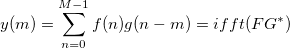
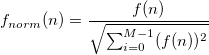
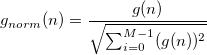
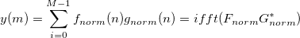

相関は、相関定理に基づく高速アルゴリズムを使って計算されます。
f(n) と g(n) を入力信号とし、y(m)を出力とすると、次式のようになります:

ここで F は f(n)のフーリエ変換、 G は g(n) のフーリエ変換で、 * は複素共役を表します。そのため、相関の計算は、実際には次のように実行されます。
正規化チェックボックスが選択されていると、相関の計算の前にまず2つの信号が正規化されます。
正規化は次の式で求められます。
および 
正規化された相関は次式で計算できます。

ここで Fnorm は f‧norm(n)のフーリエ変換、Gnormは、 gnorm(n) のフーリエ変換で、*はは複素共役を表します。
線形の相関が計算される場合、FFTの計算の前に0付加は実行されます。
サンプリング間隔で<自動>が選択されていると、計算で必要なサンプリング間隔はOriginが自動的に計算します。
自動的に計算されるサンプリング間隔は、時間データの増加の平均で、これは通常入力信号と結びついているXデータが使われます。結びついているX列が無ければ、行番号が使われます。Originが増加の平均を取得するのに失敗した場合、サンプリング間隔は1にセットされます。